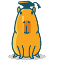

Julien DURIS
Senior Backend Developer (Go, TypeScript, Rust) /
Cloud /
AI-assisted Development /
Security /
Pragmatism /
Teamwork
EXP.
EXPERIENCE
-
Indépendant, Paris
DEC. 2018 – MAINTENANT
-
Spendbaker, Paris
SEP. 2025 – MAINTENANT
- Co-fondateur & CTO.
- Co-fondation de la startup avec 2 associés ; direction de la stratégie technique, de l'architecture cloud et mentorat de 2 stagiaires ingénieurs.
- Architecture Go centrale : conception et développement d'un monolithe et de microservices Go à haute performance communicant via gRPC.
- Cloud & DevOps pragmatiques : équilibre entre rapidité de livraison et stabilité via une infrastructure conteneurisée allégée (Docker & CI/CD GitHub Actions), évitant la complexité prématurée de Kubernetes/Terraform.
- Ingénierie Go bas niveau : développement sur mesure de packages de production et librairies Go internes pour optimiser la mémoire, le réseau et la concurrence.
- Base de données & API : PostgreSQL comme base principale et API REST/JSON robustes.
- Workflows de développement pilotés par l'IA : utilisation d'agents IA et de directives/skills personnalisées pour accélérer le développement et maintenir un haut niveau de qualité.
- Écosystème polyglotte avec microservices ciblés en Rust et TypeScript.
-
OVHCloud, Paris
NOV. 2024 – MAINTENANT
- Développeur Backend Senior Go.
- Équipe Customer Management : conception et exploitation de microservices Go à l'échelle du cloud gérant plusieurs millions de données clients.
- Architecture Cloud & Résilience : conception de systèmes distribués à grande échelle (architecture événementielle avec streaming Kafka et consommateurs idempotents, orchestration de workflows complexes via Temporal).
- Ingénierie Go avancée : écriture de code Go idiomatique, propre et fortement concurrent, répondant à de strictes exigences de performance et d'efficience mémoire.
- Infrastructure Cloud & Ops : gestion d'infrastructures Kubernetes et Terraform (IaC), déploiements sans interruption (rolling updates, déploiements progressifs, feature flags).
- Ingénierie de bases de données à l'échelle : optimisation PostgreSQL sur de gros volumes, stratégies d'indexation et migrations de schéma à chaud (zero-downtime, zéro perte de données).
- Gouvernance d'API & Contrats : conception d'API gRPC et REST versionnées garantissant une rétrocompatibilité stricte pour les consommateurs du cloud.
- Ingénierie logicielle assistée par l'IA : création de directives d'agents IA et de skills sur mesure pour imposer les standards Go de l'équipe, automatiser le boilerplate et booster la productivité.
- Observabilité Cloud & Fiabilité : observabilité complète (métriques Prometheus/Grafana, tracing distribué OpenTelemetry) et responsabilité directe de la production (astreintes, post-mortems, runbooks).
- Sécurité & Conformité : architecture cloud conforme RGPD (protection des données PII, politiques de rétention, workflows de droit à l'effacement).
- Leadership technique : cadrage des décisions via des RFC et documents de conception, revues de code et mentorat sur les bonnes pratiques Go.
-
Souk, Paris
JUIL. 2023 – JAN. 2024
- TL;DR: PGSQL, Typescript/Next.js, ReactNative/Expo, Docker, AWS, creation/maintenance de JSON API, tests fonctionnels/unitaires.
- Secteur hautement compétitif, scraping de Vinted.
- Effort constant pour obtenir des performances excellentes: backend 100% en Go.
- Création de nouveaux outils et de nouvelles API, tout en Go, depuis zéro, maintenance, déploiement sur AWS.
- Développement de plusieurs algorithmes hautement optimisés et rapides en Go.
- À propos d'AWS : utilisation de ECS, EC2s, NLBs et ELBs.
- Mises en œuvre rapides des retours utilisateurs.
- Haute couverture de code.
-
Motuu, Paris
MAI. 2023 – MAI. 2023
- TL;DR: Go et Next.js avec GraphQL.
- Mission d'une semaine, pour une très jeune startup. 70% front-end, 30% back-end.
- Développement complet de l'interface utilisateur web.
-
SORENIR, Rennes
MAR. 2023 – NOV. 2023
- TL;DR: MySQL, Go, Typescript/ReactJS.
- Contexte, digitalisation d'une entreprise: transformer BEAUCOUP de processus humains en services, outils et API en Go.
- Beaucoup d'automatisations. Déploiements et algorithmes spécifiques.
- Développement de 3 outils internes. ReactJS/Golang. 1 mini éditeur Markdown pour la création de modèles d'e-mails, 1 annuaire professionnel et 1 tableau de bord pour la gestion des dossiers clients.
- Backend 100% en Golang. Développement d'environ 15 endpoints à partir de zéro, sans framework, bon vieux http/net.
- Frontend 100% en ReactJS.
- Manipulations de PDF (écriture de texte, génération de QR codes, redimensionnement).
- Requêtes vers plusieurs API tierces et... 1 scanner, via sftp, situé dans les locaux de l'entreprise.
- J'ai dû concevoir toute l'architecture backend, sa sécurité et le design du frontend par moi-même.
-
Sharecare, Paris
AOUT 2020 – DEC. 2021
- TL;DR: CosmosDB, Typescript/NodeJS, Go. Azure Cloud, CI/CD, Docker, k8s.
- En mission chez Sharecare, la partie digitale d'une grande entreprise americaine spécialisée dans l'accompagnement dans domaine de la santé, en tant que dev fullstack.
- Developement complet d'un outil de certification de prevention de la COVID-19 pour hotels, ecoles, stades et bateaux de croisieres, en suivant les recommendations stricts du CDC americain (Center for Disease Control).
- On a demarre en etant une equipe de 12 developpeurs. Nous etions 12+ apres un an.
- Nous avons concu cet outil de prevention de la COVID-19 en 3 parties separees: le Front, une API Back en NodeJS/Typescript, et le chatbot au milieu.
- Developpement du front en NextJS (TypeScript)
- Backend API monolithique utilisant Azure Functions, en TypeScript
- Chatbot concu en utilisant le Bot Framework de Microsoft
- Base de donnee CosmosDB, un genre de BDD NoSQL, a la sauce Microsoft
- Une grosse partie des outils fonctionnels et techniques ont ete concu maison par moi meme, en NodeJS, Go et routines shells
- Ai organiquement pris le role de Lead Dev⬆️ des que l'equipe s'est mis a grossir
- Ai travailler avec les outils Azure et Github CI
- Ardent defenseur de la qualite du code. J'ai pris soin de faire en sorte qu'une couverture de test unitaire correcte soit mise en place
-
Radio France, Paris
JAN. 2016 – SEP. 2018
- TL;DR: PHP 7, Go, JS, PGSQL, Docker, k8s, unit testing, DevOps.
- Arrivé en tant que développeur Javascript pour le front de France Bleu. 25% Javascript 75% PHP.
- Puis Lead Developer pour France Bleu.
- Maintenance du Pilote Editorial (application BackEnd des journalistes France Bleu) en Drupal 7.
- Après une année, changement pour France Inter. Beaucoup de Symfony & encore plus de Javascript vanilla. Debut de transition en ReactJS.
- Puis Lead Developer pour France Inter.
- Après 7 mois, déménagement chez oTTo, une équipe du BackEnd spécialisé dans la reception et le traitement des données.
- Promu au rang de couteau-suisse ⬆️ Back-End + Front-End + DevOPS
- Role transverse, presence sur la migration du back office en Drupal 7/8, ainsi que sur la CI/CD, deploiement et architecture software.
- Developpement en Go et JS/ReactJS (Web UI) d'outils d'automatisation, industrialisation, tests unitaires & de dashboards (REST APIs) de data des projets/branches dans le but d'augmenter la velocite des sprints.
- Construction d'images Docker de testing et deploiement de Go pour k8s.
- Appris énormement à propos des architectures infra et applicatives.
-
Chronollection, Paris
JAN. 2014 – DEC. 2015
- TL;DR: PHP 5, JS, MySQL, Sphinx.
- Première fois Directeur Technique, pour un groupe d'investisseurs.
- Maintenance d'une plateforme en ligne d'achat/vente de montre de luxe (web & mobile).
- Maintenance d'un site eCommerce en Prestashop (v1.6).
- Construction de nouveaux site en Prestashop (v2).
-
Mezalis, Paris
SEP. 2013 – DEC. 2013
- TL;DR: PHP 5, JS, MySQL, Zend
- Développement complet d'une web application de gestions des pensions pour les fonctionnaires retraités de l'Etat Gabonais.
- Zend, jQuery, Oracle.
COMPETENCES
- Langages:
- Go (6 années) 💗💗
- Rust (2 années) 💗💗
- TypeScript (4 années) 💗
- NodeJS, Javascript Vanilla/ES6 (4 années)
- C (2 années)
- PHP > 5.4 < 7.2 (4 années)
- MySQL (4 années)
- BoltDB (1 année)
- PostgreSQL (2 années)
- MongoDB (2 année)
- CosmosDB (1 année)
- Tools:
- Git (Mes repos)
- AWS (EC2, ECS, NLB, ELB), GCP, Azure, Supabase
- Docker 🐋, Kubernetes 💗
- ElasticSearch 💗, Sphinx
- Datadog, OpenTelemetry, Kibana, Grafana
- Jenkins
- LDAP, Active Directory
- Gin (Go, 2 années) 💗
- Rocket (Rust, 1 année) 💗💗
- ReactJS/NextJS (5 années) 💗
- ReactNative (1 année) 💗
- Symfony 2/3 (2 années)
-
Alignement:
- Vrai Neutre ☯
- L'équipe est tout, personne ne fait loi, tout peut être discuté.
- Automatiser la planète 💗
- Faire simple est cool.
- Tester c'est douter. Ne pas tester c'est EXPLOSER rapidement.
FORMATION
- 2021-2022 Deep Learning Specialization, Coursera
- 2019-2020 Ecole Internationale de Japonais de Tokyo, Tokyo
- 2009-2012 EPITECH, Paris
- 2005-2007 EPITECH, Paris
- 2001-2004 Bac STL, Dreux
LANGUES
- > Je parle couramment français. > Français natif
- > I speak English very well. > Anglais bilingue
- > 日本語が少し話せます。(JLPT N4) > Japonais (JLPT N4)